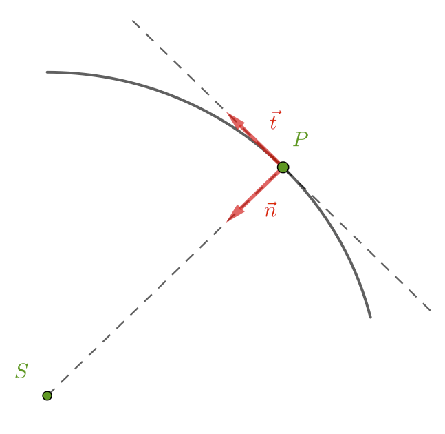

Système mécanique et interactions
Qu’est-ce qu’un système mécanique ?
Un système mécanique est un objet ou un ensemble d’objets dont on détermine le mouvement à partir de l’étude des interactions auxquelles il est soumis.
Un système mécanique est dit fermé si sa masse ne varie pas au cours du mouvement, ouvert dans le cas contraire.
- Remarque.
- Dans la suite de ce chapitre, on ne traitera que le cas des systèmes fermés.
Interactions
-
Quand un système $A$ agit sur un système $B$, $B$ agit simultanément sur $A$. On dit que $A$ et $B$ sont en interaction. L’action de $A$ sur $B$ est notée $A/B$.
Cet énoncé s’applique dans toutes les situations, que les systèmes soient au repos ou en mouvement. -
On parle d'interaction de contact lorsque $A$ et $B$ se touchent.
-
On parle d'interaction à distance lorsque $A$ et $B$ n’ont aucun point en commun.
- Remarque.
- En fait les interactions à distance n’existent pas, les systèmes interagissent avec les champs au point de l’espace où ils se situent. La notion d’interaction à distance peut cependant être utile lors de l’étude de problèmes simples.
Forces
L’étude du mouvement d’un système nécessite la modélisation de chacune des interactions auxquelles il est soumis. L’objet résultat de cette modélisation s’appelle une force, c’est un vecteur lié.
Pour décrire complètement une force, il faut fournir :
-
son point d’application ;
-
sa direction ;
-
son sens d’action ;
-
sa valeur (l’unité étant le newton N).
Quelques interactions et forces étudiées dans les classe précédentes :
- Force gravitationnelle de Newton, $\overrightarrow{F_g}{_{A/B}}$, modélisation de l’interaction gravitationnelle entre les objets ponctuels (ou à symétrie sphérique de masse) $A$ et $B$ de masses $m_A$ et $m_B$.
- Force électrostatique de Coulomb, $\overrightarrow{F_e}{_{A/B}}$, modélisation de l’interaction électrostatique entre les charges ponctuelles (ou à symétrie sphérique) $q_A$ et $q_B$ placées en $A$ et $B$.
- Poids d’un objet $\overrightarrow{P}$ au voisinage de la Terre, c’est en première approximation la force gravitationnelle qu’exerce la Terre sur cet objet.
- Réaction du support $\overrightarrow{R}$, c’est la modélisation de l’interaction entre un support et un objet qui est posé dessus ou qui glisse dessus.
Rappeler les caractéristiques de chacune de ces interactions et forces et dire, en particulier, s’il s’agit d’interactions de contact ou pas.
Centre d’inertie d’un système mécanique
Le centre d’inertie, noté $G$, est un point particulier d’un système mécanique : c’est l’équivalent du barycentre introduit dans le cours de mathématique. Les lois de la mécanique introduites par Newton permettent de prédire ou d’expliquer le mouvement du barycentre d’un système et uniquement de celui-ci.
Dans la plupart des cas, elles ne permettront donc pas de prédire ou d’expliquer le mouvement complet du système (exemple mouvement en l’air du bâton d’une majorette).
- Remarque.
- Si le système est à répartition sphérique de masse, le centre d’inertie est confondu avec le centre de l’objet
Description du mouvement d’un système mécanique
Référentiels
La description du mouvement d’un système mécanique dépend du référentiel choisi.
Un référentiel est le solide (réel ou virtuel), auquel on a attaché une horloge, par rapport auquel on décrit le mouvement du système.
- Remarque.
- Le choix d’un référentiel est arbitraire ; il est possible de décrire le mouvement d’un système dans n’importe quel référentiel. En pratique, on choisit généralement celui dans lequel le mouvement à étudier est le plus simple.
- Remarque.
- Tous les référentiels possèdent la même horloge, en mécanique de Newton.
- Exemples.
- Référentiel terrestre (lié à la Terre), référentiel géocentrique, référentiel héliocentrique.
Repères d’espaces et de temps
Il est nécessaire de repérer les différentes positions que le système occupe au cours du temps, lors de son mouvement. On utilise donc :
-
un repère d’espace pour repérer la position dans l’espace du système (ceci conduit à l’introduction du vecteur position $\overrightarrow{OG}$ et/ou à l’utilisation des coordonnées spatiales du point $G$, centre d’inertie du système) ;
-
une horloge pour repérer les dates.
Trajectoire
L’ensemble des positions qu’occupe $G$ au cours du mouvement du système est appelé la trajectoire de ce système.
Vecteur vitesse
La vitesse, à la date $t$, d’un système, dans un référentiel donné, est définie par $$\vec{v}(t) = \lim_{\Delta t \to 0} \dfrac{\overrightarrow{OM}(t + \Delta t) - \overrightarrow{OM}(t)}{\Delta t} = \dfrac{\mathrm{d} \overrightarrow{OM} }{ \mathrm{dt} }$$ C’est donc un vecteur dont les caractéristiques sont :
- Direction : droite tangente à la trajectoire, à la position du système à la date $t$ ;
- Sens : celui du mouvement ;
- Valeur : $v(t) = \left\Vert \dfrac{\mathrm{d} \overrightarrow{OM} }{ \mathrm{dt} } \right\Vert$.
Différents types de mouvements
-
Lorsque la valeur $v_G$ du vecteur vitesse est constante, le mouvement est uniforme.
-
Si le mouvement est rectiligne et uniforme, le vecteur vitesse $\overrightarrow{v}_G$ est constant.
Première et troisième loi de Newton
Première loi de Newton
Système isolé, système pseudo-isolé
-
Un système est dit (mécaniquement) isolé lorsqu'aucune force ne s’exerce sur lui ;
-
Un système est dit pseudo-isolé lorsque toutes les forces qui s’exercent sur lui se compensent à chaque instant.
Première loi de Newton : le principe de l’inertie
- Dans un référentiel galiléen, le centre d’inertie d’un système isolé ou pseudo-isolé possède un mouvement rectiligne uniforme ou est immobile.
- Réciproquement, dans un référentiel galiléen, si le mouvement du centre d’inertie d’un système est rectiligne uniforme (ou nul), le système est isolé ou pseudo-isolé. $$ \sum \overrightarrow{F}{_\text{ext}} = \overrightarrow{0} \Longleftrightarrow \overrightarrow{v}{_G} = \overrightarrow{\text{cte}} $$
Référentiel galiléen
On appelle référentiels galiléens les référentiels dans lesquels le principe d’inertie est applicable.
- Remarque.
- Le référentiel terrestre peut-être considéré galiléen pour des expériences de courte durée devant la période de rotation diurne de la Terre.
Troisième loi de Newton : principe des actions réciproques
Troisième loi de Newton : principe des actions réciproques
$A$ et $B$ étant deux corps en interaction, la force $ \overrightarrow{F_{A/B}} $ exercée par $A$ sur $B$ et la force $\overrightarrow{F_{B/A}}$ exercée par $B$ sur $A$ ont même direction, même valeur et des sens opposés : $$ \overrightarrow{F_{A/B}} + \overrightarrow{F_{B/A}} = \overrightarrow{0} $$ Ce principe reste vrai quel que soit le type de référentiel.
Lorsqu’un corps $A$ exerce sur un corps $B$, une action mécanique, le corps $B$ exerce sur le corps $A$ une réaction. Les forces caractérisant l’action et la réaction sont deux à deux directement opposées.
Deuxième loi de Newton
Vecteur accélération
Vecteur accélération
De même que l’on s’intéresse, dans un référentiel donné, au taux de variation instantanée du vecteur position du centre d’inertie d’un système à la date $t_i$ en définissant la vitesse $\overrightarrow{v_G} (t_i)$ par :
$$ \overrightarrow{v_G} (t_i) = \lim_{\Delta t \to 0} \left( \dfrac{\Delta \overrightarrow{OG}}{\Delta t} \right)_{t_i} = \left( \dfrac{\mathrm{d} \overrightarrow{OG}}{\mathrm{dt}} \right)_{t_i} $$
— On étudie ainsi comment évolue cette position au cours du temps —, on peut définir le taux de variation instantanée du vecteur vitesse $\overrightarrow{v_G}$ ou vecteur accélération $\overrightarrow{a_G} (t_i)$ du centre d’inertie du système mécanique à la date $t_i$ dans le même référentiel, par :
$$ \overrightarrow{a_G} (t_i) = \lim_{\Delta t \to 0} \left( \dfrac{\Delta \overrightarrow{v_G}}{\Delta t} \right)_{t_i} = \left( \dfrac{\mathrm{d} \overrightarrow{v_G}}{\mathrm{dt}} \right)_{t_i} $$
On étudie alors comment varie le vecteur vitesse $\overrightarrow{v_G}$ à la date $t_i$.
Unité.
On peut déterminer l’unité de la valeur du vecteur accélération en cherchant sa dimension :
$$ [a_G] = \dfrac{[v_G]}{T} = \dfrac{L / T}{T} = L \times T^{- 2} $$
Dans le système international d’unités, la valeur du vecteur accélération s’exprime donc en mètre par seconde au carré ($\pu{m.s-2}$).
-
Lorsque la trajectoire est courbe, le vecteur accélération est toujours orienté vers l’intérieur de la concavité de cette trajectoire.
-
La direction du vecteur accélération est confondue avec la trajectoire lorsque celle-ci est une droite.
-
Caractérisation de mouvements :
-
si $\overrightarrow{a}{_G} \cdot \overrightarrow{v}{_G} > 0$ : le mouvement est accéléré ;
-
si $\overrightarrow{a}{_G} \cdot \overrightarrow{v}{_G} < 0$ : le mouvement est décéléré ;
-
si $\overrightarrow{a}{_G} \cdot \overrightarrow{v}{_G} = 0$ : le mouvement est uniforme.
-
Expressions des vecteurs position, vitesse et accélération en coordonnées cartésiennes
Si dans le référentiel d’étude on utilise un repère de projection cartésien $(O ; \vec{i}, \vec{j}, \vec{k})$ et si on connaît les fonctions $x (t)$, $y (t)$ et $z (t)$, alors :
$$ \overrightarrow{OG} (t) = x(t)\, \vec{i} + y(t)\, \vec{j} + z(t)\, \vec{k} $$
$$ \begin{aligned} \overrightarrow{v_G} (t) &= v_x(t)\, \vec{i} + v_y(t)\, \vec{j} + v_z(t)\, \vec{k}\cr &= \dfrac{\mathrm{d} x}{\mathrm{dt}}\, \vec{i} + \dfrac{\mathrm{d} y}{\mathrm{dt}}\, \vec{j} + \dfrac{\mathrm{d} z}{\mathrm{dt}}\, \vec{k} \end{aligned} $$
$$ \begin{aligned} \overrightarrow{a_G} (t) &= a_x(t)\, \vec{i} + a_y(t)\, \vec{j} + a_z(t)\, \vec{k}\cr &= \dfrac{\mathrm{d} v_x}{\mathrm{dt}}\, \vec{i} + \dfrac{\mathrm{d} v_y}{\mathrm{dt}}\, \vec{j} + \dfrac{\mathrm{d} v_z}{\mathrm{dt}}\, \vec{k} \cr &= \dfrac{\mathrm{d}^2 x}{\mathrm{dt}^2}\, \vec{i} + \dfrac{\mathrm{d}^2 y}{\mathrm{dt}^2}\, \vec{j} + \dfrac{\mathrm{d}^2 z}{\mathrm{dt}^2}\, \vec{k} \end{aligned} $$
Expressions des vecteurs position, vitesse et accélération dans le repère de Frenet
Repère de Frenet
On appelle repère de Frenet le repère mobile associé au point $G$, centre d’inertie d’un système ponctuel décrivant une trajectoire, formé des deux vecteurs suivants (si on se limite à un mouvement plan) :
- le vecteur $\vec{t}$ de direction tangente à la trajectoire et de même sens que le vecteur vitesse ;
- le vecteur $\vec{n}$ de direction normale à la direction du vecteur $\vec{t}$, dirigé vers le centre de courbure instantané de la trajectoire.

Dans le repère de Frenet, $$\vec{v} = v(t)\, \vec{t}$$ et $$\vec{a}(t) = a_t\, \vec{t} + a_n\, \vec{n} = \dfrac{\mathrm{d} v}{\mathrm{dt}}\, \vec{t} + \dfrac{v^2}{r}\, \vec{n}$$ où $r$ est le rayon instantané de courbure (lorsque la trajectoire est un cercle, $r$ est le rayon du cercle).
Deuxième loi de Newton
Deuxième loi de Newton
Dans un référentiel galiléen, la somme vectorielle des forces extérieures appliquées à un système mécanique (dont la masse est constante) est égale au produit de la masse de ce système mécanique par le vecteur accélération de son centre d’inertie :
$$ m\, \overrightarrow{a_G} = \sum \overrightarrow{F_\text{ext}} $$
Remarques. :
-
La masse $m$ qui apparaît dans cette relation est la masse inertielle. Elle caractérise l’inertie du système mécanique, c’est à dire la difficulté qu’on a à modifier son mouvement.
Pour atteindre une certaine valeur de l’accélération, la valeur de la résultante des forces extérieures doit être d’autant plus grande que la masse du système est importante (sauf pour la chute libre, voir le prochain chapitre). -
Toute modification du mouvement (donc de $\overrightarrow{v_G}$) d’un système mécanique nécessite la présence d’une ou plusieurs forces non compensées.
-
Il n’existe aucune relation directe entre force et vitesse.
-
Retour sur l’unité des forces : le newton $$ [F] = [ma_G] = M \times [a_G] = M \times L \times T^{- 2} $$ c’est la valeur de la force constante qui, appliquée à un système de masse $\pu{1 kg}$, lui communique une accélération de $\pu{1 m.s-2}$.